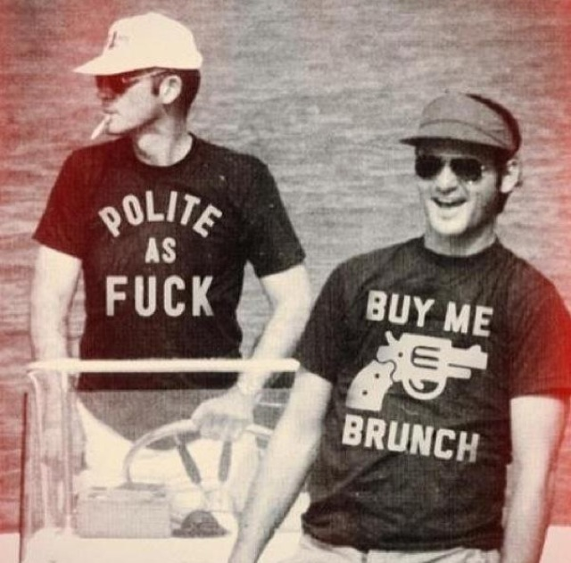

William James Murray (born September 21, 1950) is an American actor, comedian, and writer. He first gained exposure on Saturday Night Live, a role that earned him his first Emmy Award, and later starred in comedy films—including Meatballs (1979), Caddyshack (1980), Stripes (1981), Tootsie (1982), Ghostbusters (1984), Scrooged (1988), Ghostbusters II (1989), What About Bob? (1991), and Groundhog Day (1993). He also co-directed Quick Change (1990).
Murray was born on September 21, 1950 in Evanston, Illinois, and was raised in Wilmette, Illinois, a northern suburb of Chicago. He is the son of Lucille (née Collins), a mail room clerk, and Edward Joseph Murray II, a lumber salesman.
In 1975, an Off-Broadway version of a Lampoon show led to his first television role as a cast member of the ABC variety show Saturday Night Live with Howard Cosell.
